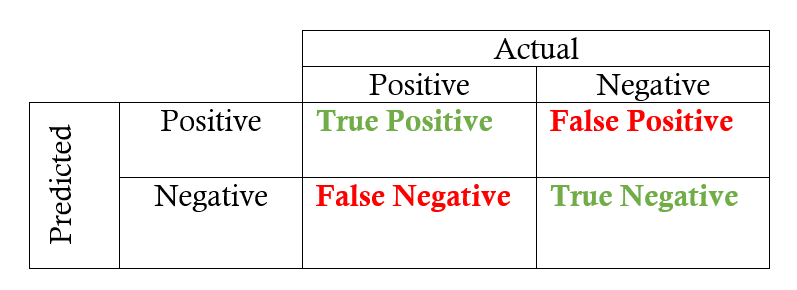

False Positives and False Negatives

Detection Cases. Taken from an article on Machine Learning by Cem Dilmegani.
When choosing between security tools on the market for your system, the goal is to reduce False Positive and False Negative cases as much as possible. This can be done by:
- Using services of several tools in parallel (e.g., 2 firewalls, 3 anti-viruses, etc.) Challenges: (a) Might be costly (b) Might increase False Positive cases.
- [To reduce False Negative cases:] Increasing the sensitivity/detection threshold of the security system.
- [To reduce False Positive cases:] Decreasing the sensitivity/detection threshold of the security system.
 These notes by Miriam Briskman are licensed under CC BY-NC 4.0 and based on sources.
These notes by Miriam Briskman are licensed under CC BY-NC 4.0 and based on sources.